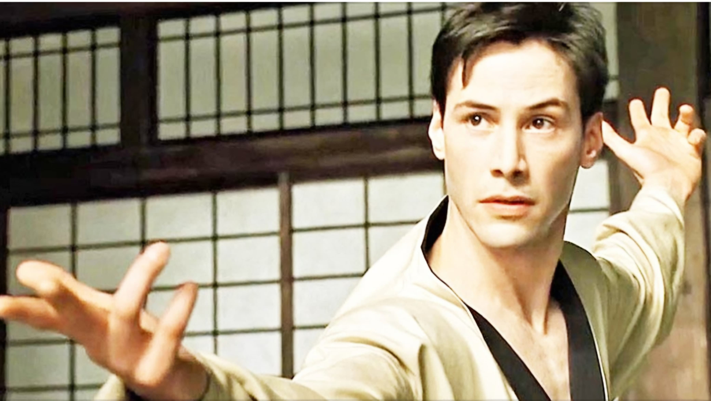
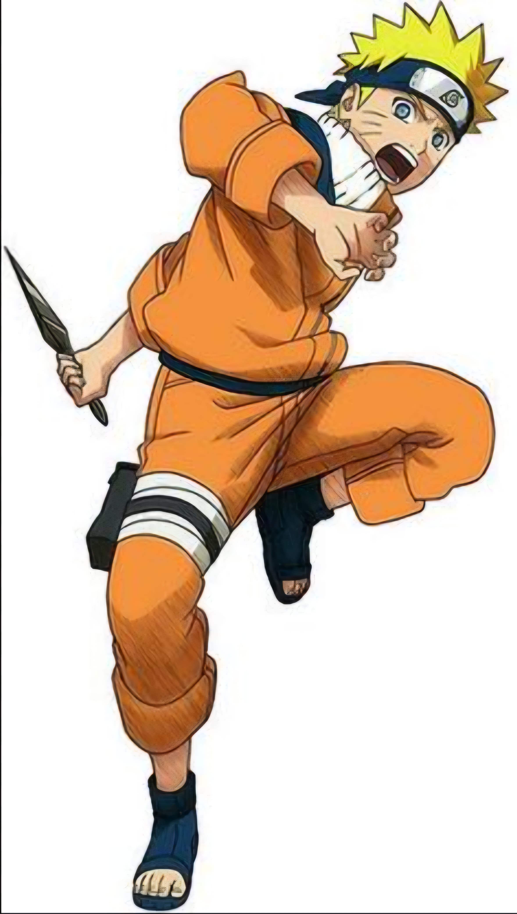

Detail Page: Legendary Figures
Bruce Lee

Bruce Lee was a martial arts master, philosopher, and actor who revolutionized the portrayal of Asians in film and popularized kung fu in the West. His philosophy and discipline continue to inspire generations.
Neo from The Matrix
Neo, played by Keanu Reeves, is a central character in The Matrix trilogy. Known for his journey of awakening and resistance against a simulated reality controlled by machines, he symbolizes freedom and questioning reality.
Naruto Uzumaki
Naruto, a character from the anime series of the same name, is known for his persistence, positive attitude, and growth from a lonely child to a respected leader. His story emphasizes friendship, perseverance, and self-belief.
Summary
These figures have made a tremendous impact in their respective genres and cultures. Their influence spans decades and their stories continue to resonate with fans globally.